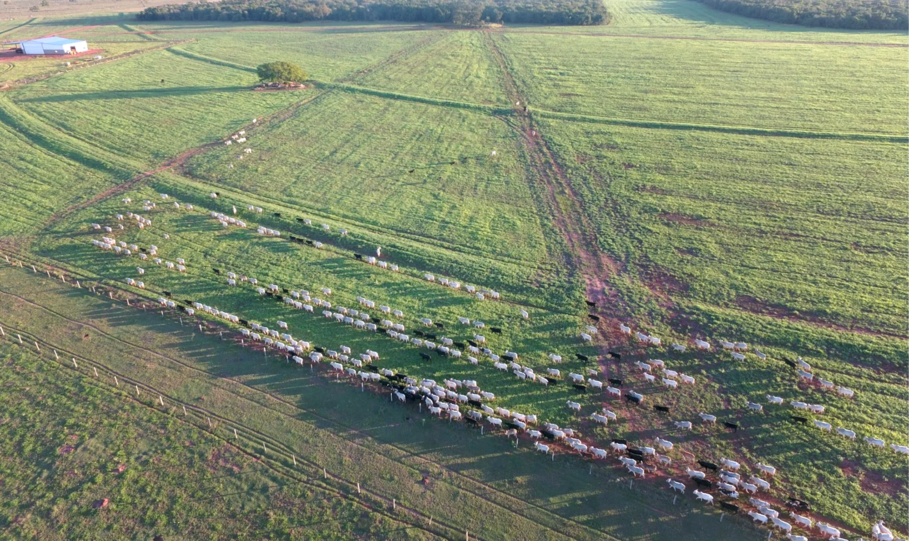
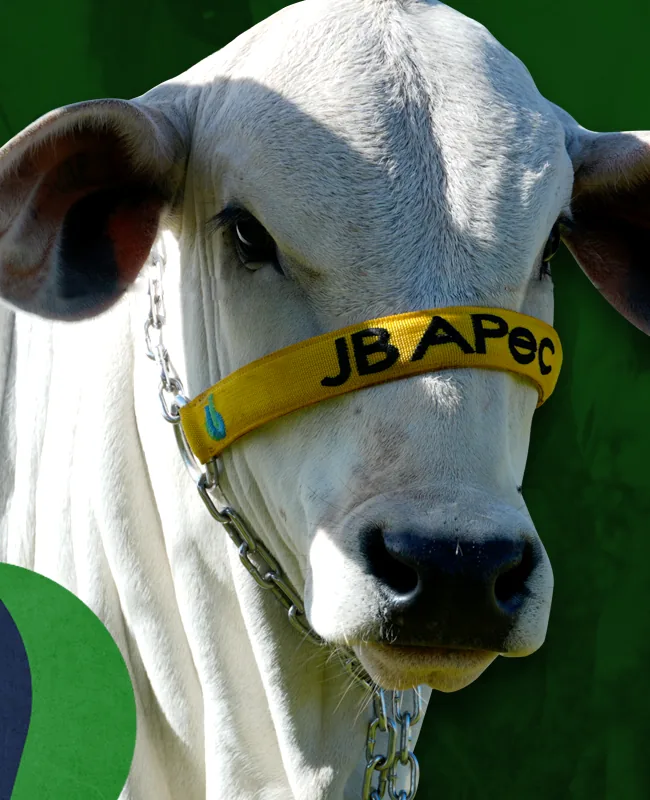
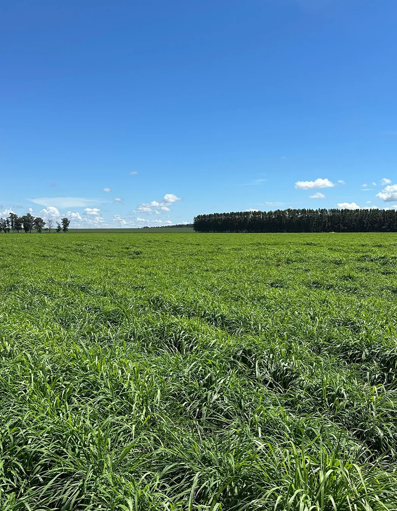
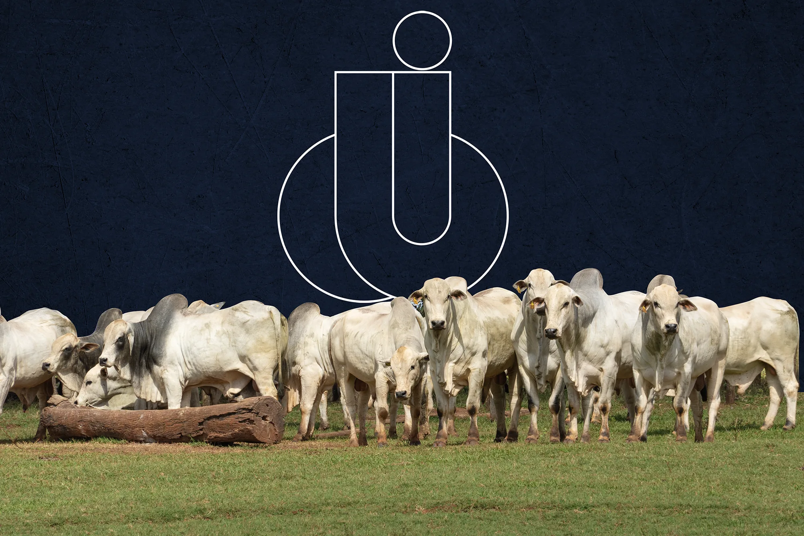
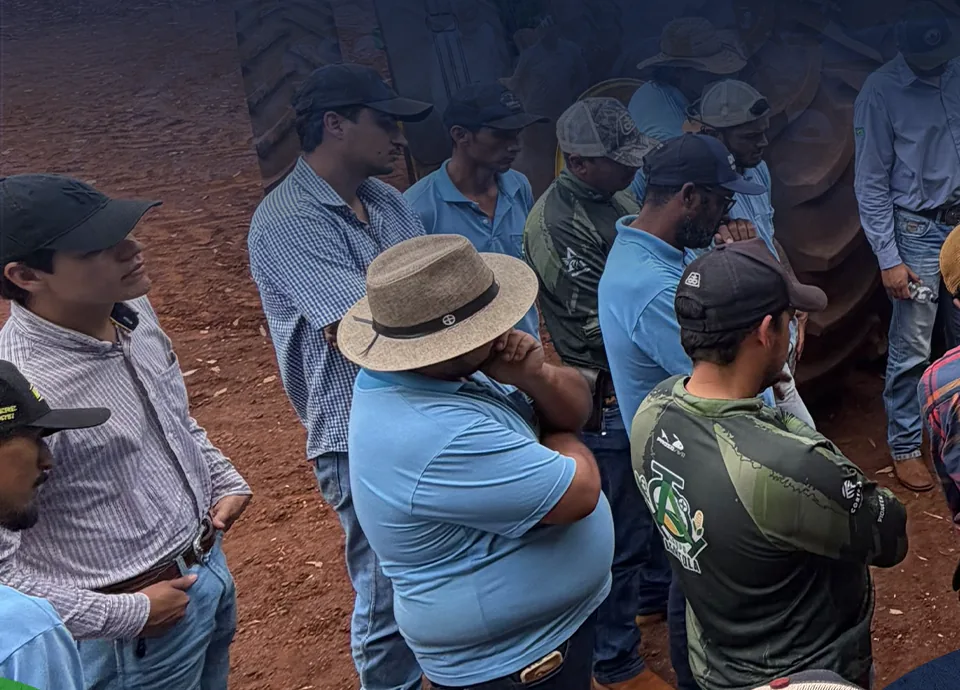
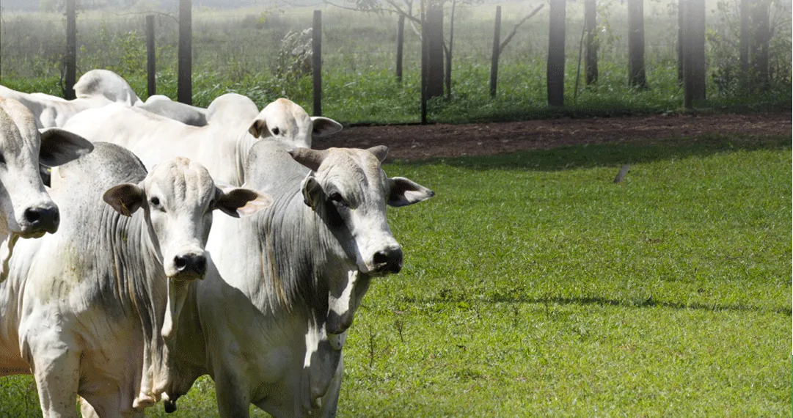

Soja e milho em plantio direto
- Grãos de soja e milho, um dos principais negócios da empresa.
- Plantio direto: a palha da safra anterior protege o solo.
- Armazenagem própria em Silo Bateria, na Estância Rosa Branca.
Jarbas Barbosa Agricultura e Pecuária · Rio Brilhante (MS)
Soja, milho e gado de corte na mesma terra: integração lavoura-pecuária em quatro unidades no Mato Grosso do Sul.
Quatro gerações produzindo grãos e carne. Fale com a nossa equipe.
Em 1905, Lino Barbosa da Silva e Guiomar chegaram de Borda da Mata (MG) à zona rural do que viria a ser Rio Brilhante e fundaram a Fazenda Campo Alegre, criando gado. Hoje a família Barbosa produz grãos e carne em fazendas integradas, com gestão profissional e o mesmo endereço de origem.

Na mesma área, colhemos a soja e formamos o pasto. O gado aproveita a entressafra e devolve palhada e matéria orgânica ao solo da próxima safra.

Sabemos de onde vem cada animal, porque ele nasce, cresce e termina em fazendas da JB APec.

O capim é semeado na entrelinha da soja, antes da colheita. Quando a máquina passa, o pasto já está formado, sem tirar produtividade do grão. A Estância Rosa Branca foi uma das duas áreas que validaram a tecnologia com a Embrapa na safra 2019/20.
Cerca de 350 ha em três fazendas, seis anos de adoção. Fonte: Embrapa.

Escritório central em Rio Brilhante (MS).
Integração lavoura-pecuária, soja e milho em Silo Bateria, confinamento e área de validação do Antecipasto.
Grãos no verão, recria o ano todo, "Desafio" F1 Angus e Antecipasto em solo arenoso. Sede do Dia de Campo Embrapa 2026.
Produção de grãos de soja e milho.
Cria de bovinos de corte e melhoramento genético Nelore Mocho, com pastejo rotacionado.

Treinamentos técnicos e gerenciais, programas de saúde e segurança do trabalho, EPIs fornecidos e reconhecimento por mérito. Buscamos operadores, auxiliares agrícolas e técnicos.
Envie seu currículo para rh@jbapec.com.br com o assunto "(vaga) – CV seu nome".

Compra de grãos ou de gado, fornecedores, imprensa e visitas técnicas.